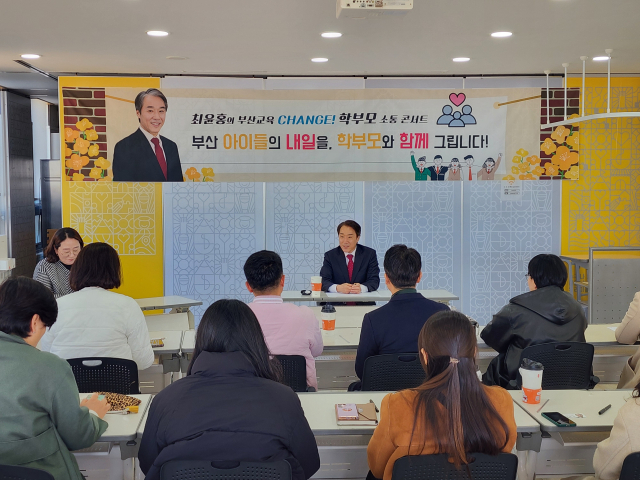
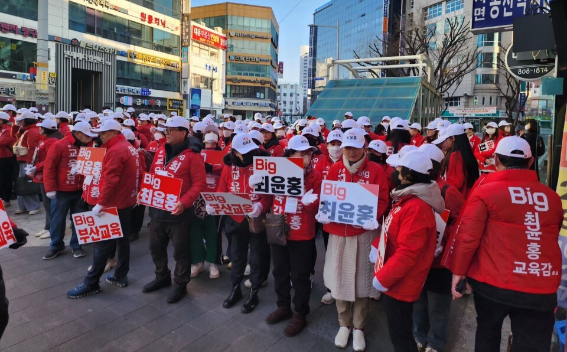
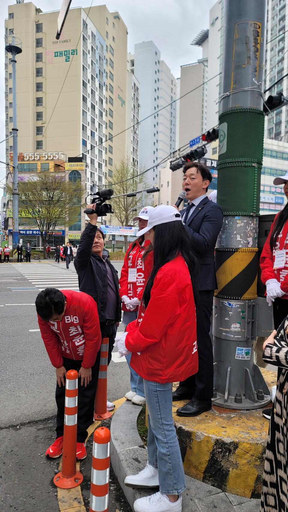
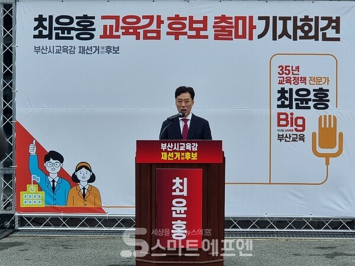
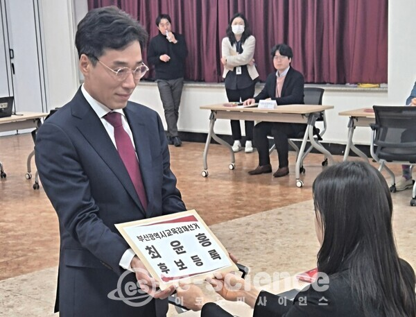

사진첩 현장에서 만나는 최윤홍








부산교육감 후보
Big 부산 교육
행복한 부산교육을 만들겠습니다
"1989년 9급 공무원으로 시작해
35년간 초·중등 교육정책만 담당했습니다.
교육은 정치가 아닌 전문가가 해야 합니다."
부산교육감 후보
1989년 공직 시작
2022년 10월 취임
2024년 12월~
전가정·학교·지역이 함께하는 인성교육
미래를 준비하는 교육 혁신
학생 안전과 건강을 최우선으로
교육 기회의 평등한 보장
현장의 목소리를 듣는 교육행정




